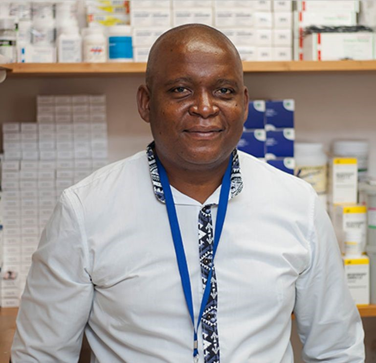

Foundations in Epidemiology, Statistics, and Scientific Writing. Empowering clinical observers to confidently transition into lead researchers with sound analytical pipelines.
"Graduates of the Masterclass will possess the end-to-end skills required to conceptualise a clinical study, descriptively analyse data with precision, and confidently contribute evidence-based findings to medical literature."
Funded and operated by the Swiss charitable organisation Ruedi Lüthy Foundation, Newlands Clinic is an outpatient clinic located in Harare, Zimbabwe. The clinic provides comprehensive, long-term care and treatment to destitute HIV and Aids patients in southern Africa.
The Research Department plays a major role in improving complex HIV therapy across southern Africa. By conducting independent research and participating in international scientific studies, our team focuses on enhancing daily patient management.
Click to watch the introductory masterclass presentation.
Weeks 1 - 6
Master foundational principles of population health research, formulate research questions, and design clinical studies.
Weeks 7 - 12
Develop analytical literacy to properly evaluate research metrics, avoid bias, and select sound hypothesis tests.
Applications are reviewed on a rolling basis. Click below to open our official enrollment and evaluation portal directly via Google Forms.
Go to Application FormMeet the research specialists, public health officers, and clinical epidemiologists guiding the Research Masterclass for Clinicians cohort.
RM Course Director
PhD Epidemiologist / Data Analyst & Generative AI Researcher
RM Course Coordinator
MSc Public Health / Data Analyst
RM Instructor
Director Research & Training
MBCHB, MPH, PhD
RM Instructor
PhD Epidemiologist

RM Instructor
PhD Candidate
RM Course Coordinator Assistant
Data Analyst